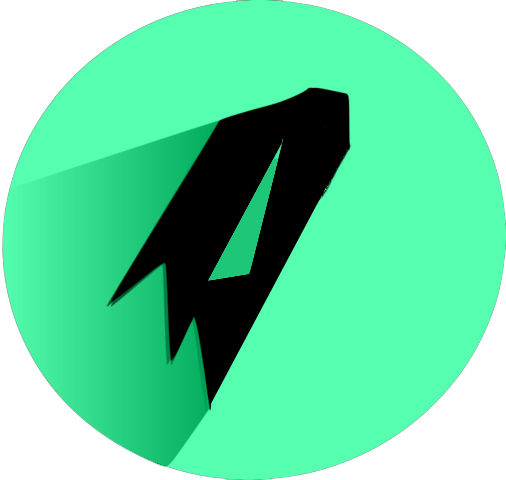

O primeiro serviço de Comandos Remotos
do Brasil
Balo.OS é um serviço feito para quem busca praticidade na hora de executar comandos De qualquer lugar com qualquer equipamento, tanto no conforto de sua casa quanto em uma cafeteria ou um seu trabalho , você poderá realizar suas tarefas, Utilizar Ferramentas, Testar sua rede, Entre outras diversas situações. Esse serviço consta com um poderoso servidor com diversos recursos feitos exclusivamente para conseguir executar qualquer comando de qualquer ferramenta ou serviço remotamente
Sua interface é feita a base de linux com um Menu minimalista de facil acesso a qualquer Tipo de usuario , dando acesso a diversas ferramentas tais como "Metasploit","BeeF","Nmap" e a algumas configurações personalizadas , para deixar ainda mais eficiente sua utilização a conexão com este serviço é feita exclusivamente via um servidor SSH cujo está ativo 24 horas por dia 7 dias por semana , ao se conectar o usuario receberá um link e atráves dele Poderá começar a sua utilização.
Nossa equipe é formada exclusivamente de 3 pessoas , o projeto Balo.OS ainda está em desinvolvimento E Consta com um sistema de crowdfunding para mais informações de como adiquirir deixe suas informações e entraremos em contato logo em seguida para esclarecer a utilização experimental do serviço